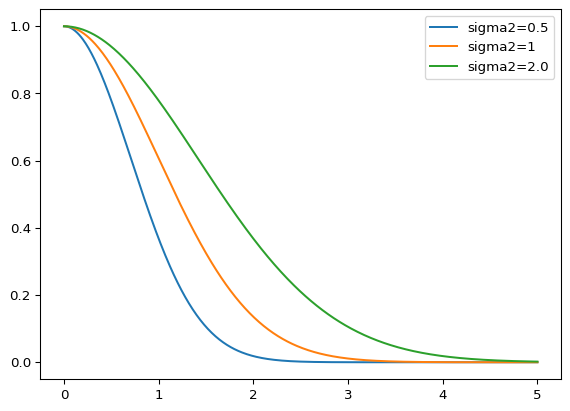
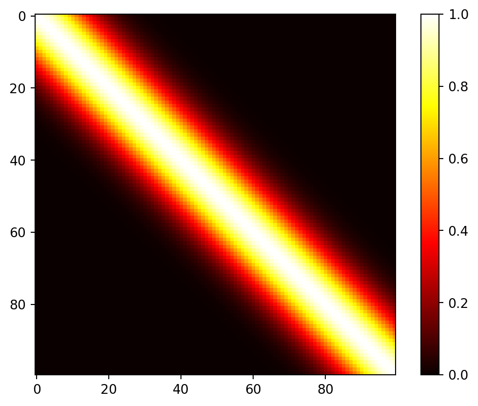
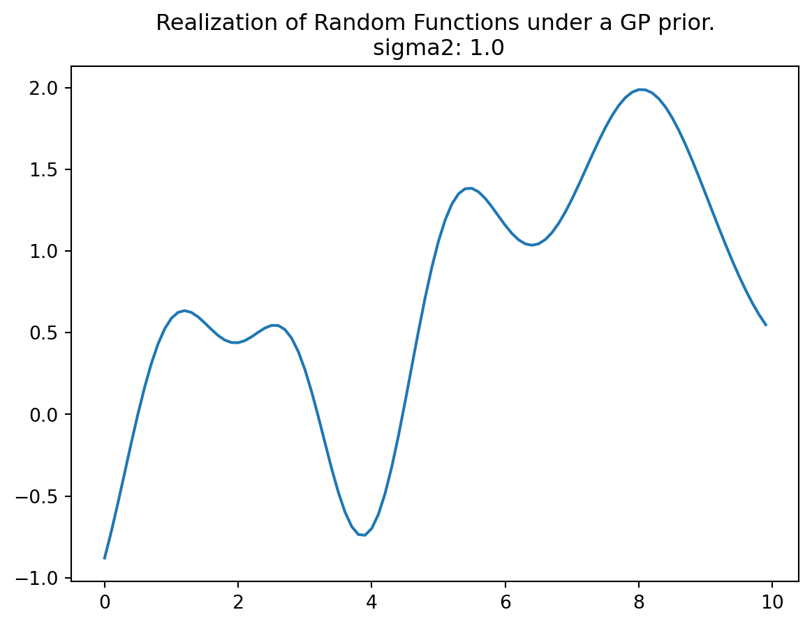
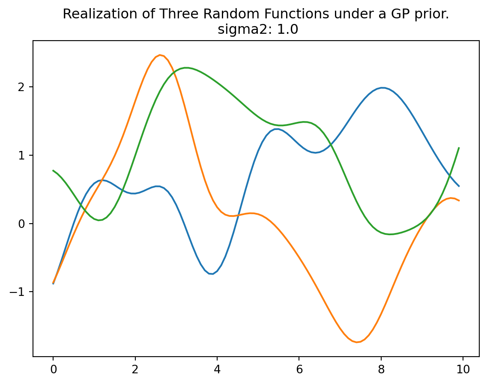
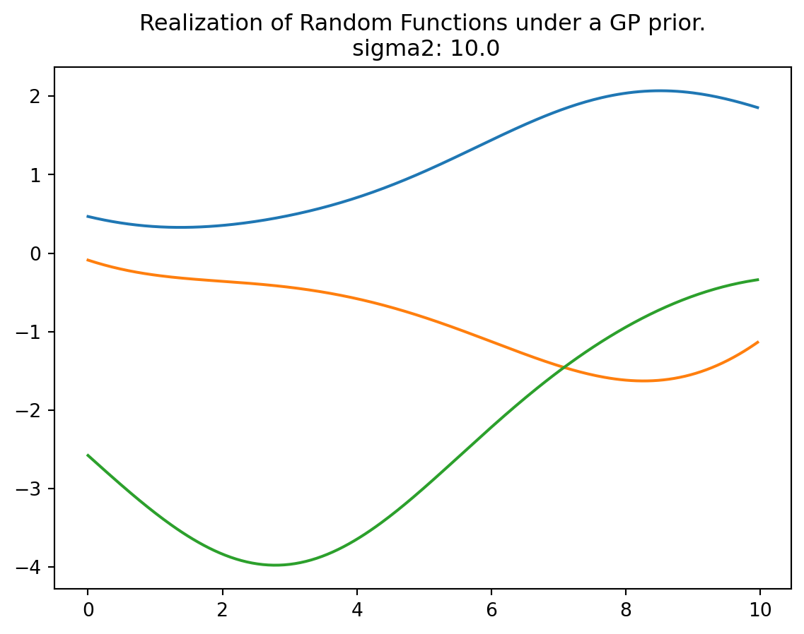
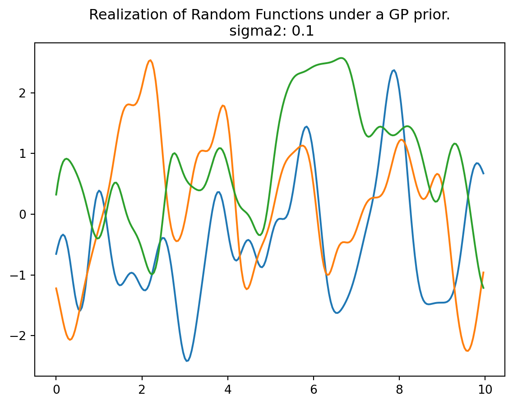

51 Gaussian Processes—Some Background Information
The concept of GP (Gaussian Process) regression can be understood as a simple extension of linear modeling. It is worth noting that this approach goes by various names and acronyms, including “kriging,” a term derived from geostatistics, as introduced by Matheron in 1963. Additionally, it is referred to as Gaussian spatial modeling or a Gaussian stochastic process, and machine learning (ML) researchers often use the term Gaussian process regression (GPR). In all of these instances, the central focus is on regression. This involves training on both inputs and outputs, with the ultimate objective of making predictions and quantifying uncertainty (referred to as uncertainty quantification or UQ).
However, it’s important to emphasize that GPs are not a universal solution for every problem. Specialized tools may outperform GPs in specific, non-generic contexts, and GPs have their own set of limitations that need to be considered.
51.1 Gaussian Process Prior
In the context of GP, any finite collection of realizations, which is represented by \(n\) observations, is modeled as having a multivariate normal (MVN) distribution. The characteristics of these realizations can be fully described by two key parameters:
- Their mean, denoted as an \(n\)-vector \(\mu\).
- The covariance matrix, denoted as an \(n \times n\) matrix \(\Sigma\). This covariance matrix encapsulates the relationships and variability between the individual realizations within the collection.
51.2 Covariance Function
The covariance function is defined by inverse exponentiated squared Euclidean distance: \[ \Sigma(\vec{x}, \vec{x}') = \exp\{ - || \vec{x} - \vec{x}'||^2 \}, \] where \(\vec{x}\) and \(\vec{x}'\) are two points in the \(k\)-dimensional input space and \(\| \cdot \|\) denotes the Euclidean distance, i.e., \[ || \vec{x} - \vec{x}'||^2 = \sum_{i=1}^k (x_i - x_i')^2. \]
An 1-d example is shown in Figure 51.1.
The covariance function is also referred to as the kernel function. The Gaussian kernel uses an additional parameter, \(\sigma^2\), to control the rate of decay. This parameter is referred to as the length scale or the characteristic length scale. The covariance function is then defined as
\[ \Sigma(\vec{x}, \vec{x}') = \exp\{ - || \vec{x} - \vec{x}'||^2 / (2 \sigma^2) \}. \tag{51.1}\]
The covariance decays exponentially fast as \(\vec{x}\) and \(\vec{x}'\) become farther apart. Observe that
\[ \Sigma(\vec{x},\vec{x}) = 1 \] and
\[ \Sigma(\vec{x}, \vec{x}') < 1 \] for \(\vec{x} \neq \vec{x}'\). The function \(\Sigma(\vec{x},\vec{x}')\) must be positive definite.
Remark 51.1 (Kriging and Gaussian Basis Functions). The Kriging basis function (Equation 41.1) is related to the 1-dim Gaussian basis function (Equation 51.1), which is defined as \[ \Sigma(\vec{x}^{(i)}, \vec{x}^{(j)}) = \exp\{ - || \vec{x}^{(i)} - \vec{x}^{(j)}||^2 / (2\sigma^2) \}. \tag{51.2}\]
There are some differences between Gaussian basis functions and Kriging basis functions:
- Where the Gaussian basis function has \(1/(2\sigma^2)\), the Kriging basis has a vector \(\theta = [\theta_1, \theta_2, \ldots, \theta_k]^T\).
- The \(\theta\) vector allows the width of the basis function to vary from dimension to dimension.
- In the Gaussian basis function, the exponent is fixed at 2, Kriging allows this exponent \(p_l\) to vary (typically from 1 to 2).
51.2.1 Positive Definiteness
Positive definiteness in the context of the covariance matrix \(\Sigma_n\) is a fundamental requirement. It is determined by evaluating \(\Sigma(x_i, x_j)\) at pairs of \(n\) \(\vec{x}\)-values, denoted as \(\vec{x}_1, \vec{x}_2, \ldots, \vec{x}_n\). The condition for positive definiteness is that for all \(\vec{x}\) vectors that are not equal to zero, the expression \(\vec{x}^\top \Sigma_n \vec{x}\) must be greater than zero. This property is essential when intending to use \(\Sigma_n\) as a covariance matrix in multivariate normal (MVN) analysis. It is analogous to the requirement in univariate Gaussian distributions where the variance parameter, \(\sigma^2\), must be positive.
Gaussian Processes (GPs) can be effectively utilized to generate random data that follows a smooth functional relationship. The process involves the following steps:
- Select a set of \(\vec{x}\)-values, denoted as \(\vec{x}_1, \vec{x}_2, \ldots, \vec{x}_n\).
- Define the covariance matrix \(\Sigma_n\) by evaluating \(\Sigma_n^{ij} = \Sigma(\vec{x}_i, \vec{x}_j)\) for \(i, j = 1, 2, \ldots, n\).
- Generate an \(n\)-variate realization \(Y\) that follows a multivariate normal distribution with a mean of zero and a covariance matrix \(\Sigma_n\), expressed as \(Y \sim \mathcal{N}_n(0, \Sigma_n)\).
- Visualize the result by plotting it in the \(x\)-\(y\) plane.
51.3 Construction of the Covariance Matrix
Here is an one-dimensional example. The process begins by creating an input grid using \(\vec{x}\)-values. This grid consists of 100 elements, providing the basis for further analysis and visualization.
import numpy as np
n = 100
X = np.linspace(0, 10, n, endpoint=False).reshape(-1,1)In the context of this discussion, the construction of the covariance matrix, denoted as \(\Sigma_n\), relies on the concept of inverse exponentiated squared Euclidean distances. However, it’s important to note that a modification is introduced later in the process. Specifically, the diagonal of the covariance matrix is augmented with a small value, represented as “eps” or \(\epsilon\).
The reason for this augmentation is that while inverse exponentiated distances theoretically ensure the covariance matrix’s positive definiteness, in practical applications, the matrix can sometimes become numerically ill-conditioned. By adding a small value to the diagonal, such as \(\epsilon\), this ill-conditioning issue is mitigated. In this context, \(\epsilon\) is often referred to as “jitter.”
import numpy as np
from numpy import array, zeros, power, ones, exp, multiply, eye, linspace, spacing, sqrt, arange, append, ravel
from numpy.linalg import cholesky, solve
from numpy.random import multivariate_normal
def build_Sigma(X, sigma2):
n = X.shape[0]
k = X.shape[1]
D = zeros((k, n, n))
for l in range(k):
for i in range(n):
for j in range(i, n):
D[l, i, j] = 1/(2*sigma2[l])*(X[i,l] - X[j,l])**2
D = sum(D)
D = D + D.T
return exp(-D) sigma2 = np.array([1.0])
Sigma = build_Sigma(X, sigma2)
np.round(Sigma[:3,:], 3)array([[1. , 0.995, 0.98 , 0.956, 0.923, 0.882, 0.835, 0.783, 0.726,
0.667, 0.607, 0.546, 0.487, 0.43 , 0.375, 0.325, 0.278, 0.236,
0.198, 0.164, 0.135, 0.11 , 0.089, 0.071, 0.056, 0.044, 0.034,
0.026, 0.02 , 0.015, 0.011, 0.008, 0.006, 0.004, 0.003, 0.002,
0.002, 0.001, 0.001, 0. , 0. , 0. , 0. , 0. , 0. ,
0. , 0. , 0. , 0. , 0. , 0. , 0. , 0. , 0. ,
0. , 0. , 0. , 0. , 0. , 0. , 0. , 0. , 0. ,
0. , 0. , 0. , 0. , 0. , 0. , 0. , 0. , 0. ,
0. , 0. , 0. , 0. , 0. , 0. , 0. , 0. , 0. ,
0. , 0. , 0. , 0. , 0. , 0. , 0. , 0. , 0. ,
0. , 0. , 0. , 0. , 0. , 0. , 0. , 0. , 0. ,
0. ],
[0.995, 1. , 0.995, 0.98 , 0.956, 0.923, 0.882, 0.835, 0.783,
0.726, 0.667, 0.607, 0.546, 0.487, 0.43 , 0.375, 0.325, 0.278,
0.236, 0.198, 0.164, 0.135, 0.11 , 0.089, 0.071, 0.056, 0.044,
0.034, 0.026, 0.02 , 0.015, 0.011, 0.008, 0.006, 0.004, 0.003,
0.002, 0.002, 0.001, 0.001, 0. , 0. , 0. , 0. , 0. ,
0. , 0. , 0. , 0. , 0. , 0. , 0. , 0. , 0. ,
0. , 0. , 0. , 0. , 0. , 0. , 0. , 0. , 0. ,
0. , 0. , 0. , 0. , 0. , 0. , 0. , 0. , 0. ,
0. , 0. , 0. , 0. , 0. , 0. , 0. , 0. , 0. ,
0. , 0. , 0. , 0. , 0. , 0. , 0. , 0. , 0. ,
0. , 0. , 0. , 0. , 0. , 0. , 0. , 0. , 0. ,
0. ],
[0.98 , 0.995, 1. , 0.995, 0.98 , 0.956, 0.923, 0.882, 0.835,
0.783, 0.726, 0.667, 0.607, 0.546, 0.487, 0.43 , 0.375, 0.325,
0.278, 0.236, 0.198, 0.164, 0.135, 0.11 , 0.089, 0.071, 0.056,
0.044, 0.034, 0.026, 0.02 , 0.015, 0.011, 0.008, 0.006, 0.004,
0.003, 0.002, 0.002, 0.001, 0.001, 0. , 0. , 0. , 0. ,
0. , 0. , 0. , 0. , 0. , 0. , 0. , 0. , 0. ,
0. , 0. , 0. , 0. , 0. , 0. , 0. , 0. , 0. ,
0. , 0. , 0. , 0. , 0. , 0. , 0. , 0. , 0. ,
0. , 0. , 0. , 0. , 0. , 0. , 0. , 0. , 0. ,
0. , 0. , 0. , 0. , 0. , 0. , 0. , 0. , 0. ,
0. , 0. , 0. , 0. , 0. , 0. , 0. , 0. , 0. ,
0. ]])import matplotlib.pyplot as plt
plt.imshow(Sigma, cmap='hot', interpolation='nearest')
plt.colorbar()
plt.show()
51.4 Generation of Random Samples and Plotting the Realizations of the Random Function
In the context of the multivariate normal distribution, the next step is to utilize the previously constructed covariance matrix denoted as Sigma. It is used as an essential component in generating random samples from the multivariate normal distribution.
The function multivariate_normal is employed for this purpose. It serves as a random number generator specifically designed for the multivariate normal distribution. In this case, the mean of the distribution is set equal to mean, and the covariance matrix is provided as Psi. The argument size specifies the number of realizations, which, in this specific scenario, is set to one.
By default, the mean vector is initialized to zero. To match the number of samples, which is equivalent to the number of rows in the X and Sigma matrices, the argument zeros(n) is used, where n represents the number of samples (here taken from the size of the matrix, e.g.,: Sigma.shape[0]).
rng = np.random.default_rng(seed=12345)
Y = rng.multivariate_normal(zeros(Sigma.shape[0]), Sigma, size = 1, check_valid="raise").reshape(-1,1)
Y.shape(100, 1)Now we can plot the results, i.e., a finite realization of the random function \(Y()\) under a GP prior with a particular covariance structure. We will plot those X and Y pairs as connected points on an \(x\)-\(y\) plane.
import matplotlib.pyplot as plt
plt.plot(X, Y)
plt.title("Realization of Random Functions under a GP prior.\n sigma2: {}".format(sigma2[0]))
plt.show()
rng = np.random.default_rng(seed=12345)
Y = rng.multivariate_normal(zeros(Sigma.shape[0]), Sigma, size = 3, check_valid="raise")
plt.plot(X, Y.T)
plt.title("Realization of Three Random Functions under a GP prior.\n sigma2: {}".format(sigma2[0]))
plt.show()
51.5 Properties of the 1d Example
51.5.1 Several Bumps:
In this analysis, we observe several bumps in the \(x\)-range of \([0,10]\). These bumps in the function occur because shorter distances exhibit high correlation, while longer distances tend to be essentially uncorrelated. This leads to variations in the function’s behavior:
- When \(x\) and \(x'\) are one \(\sigma\) unit apart, the correlation is \(\exp\left(-\sigma^2 / (2\sigma^2)\right) = \exp(-1/2) \approx 0.61\), i.e., a relative high correlation.
- \(2\sigma\) apart means correlation \(\exp(− 2^2 /2) \approx 0.14\), i.e., only small correlation.
- \(4\sigma\) apart means correlation \(\exp(− 4^2 /2) \approx 0.0003\), i.e., nearly no correlation—variables are considered independent for almost all practical application.
51.5.2 Smoothness:
The function plotted in Figure 51.2 represents only a finite realization, which means that we have data for a limited number of pairs, specifically 100 points. These points appear smooth in a tactile sense because they are closely spaced, and the plot function connects the dots with lines to create the appearance of smoothness. The complete surface, which can be conceptually extended to an infinite realization over a compact domain, is exceptionally smooth in a calculus sense due to the covariance function’s property of being infinitely differentiable.
51.5.3 Scale of Two:
Regarding the scale of the \(Y\) values, they have a range of approximately \([-2,2]\), with a 95% probability of falling within this range. In standard statistical terms, 95% of the data points typically fall within two standard deviations of the mean, which is a common measure of the spread or range of data.
import numpy as np
from numpy import array, zeros, power, ones, exp, multiply, eye, linspace, spacing, sqrt, arange, append, ravel
from numpy.random import multivariate_normal
def build_Sigma(X, sigma2):
n = X.shape[0]
k = X.shape[1]
D = zeros((k, n, n))
for l in range(k):
for i in range(n):
for j in range(i, n):
D[l, i, j] = 1/(2*sigma2[l])*(X[i,l] - X[j,l])**2
D = sum(D)
D = D + D.T
return exp(-D)
def plot_mvn( a=0, b=10, sigma2=1.0, size=1, n=100, show=True):
X = np.linspace(a, b, n, endpoint=False).reshape(-1,1)
sigma2 = np.array([sigma2])
Sigma = build_Sigma(X, sigma2)
rng = np.random.default_rng(seed=12345)
Y = rng.multivariate_normal(zeros(Sigma.shape[0]), Sigma, size = size, check_valid="raise")
plt.plot(X, Y.T)
plt.title("Realization of Random Functions under a GP prior.\n sigma2: {}".format(sigma2[0]))
if show:
plt.show()plot_mvn(a=0, b=10, sigma2=10.0, size=3, n=250)
plot_mvn(a=0, b=10, sigma2=0.1, size=3, n=250)
51.6 Jupyter Notebook
Note
- The Jupyter-Notebook of this lecture is available on GitHub in the Hyperparameter-Tuning-Cookbook Repository